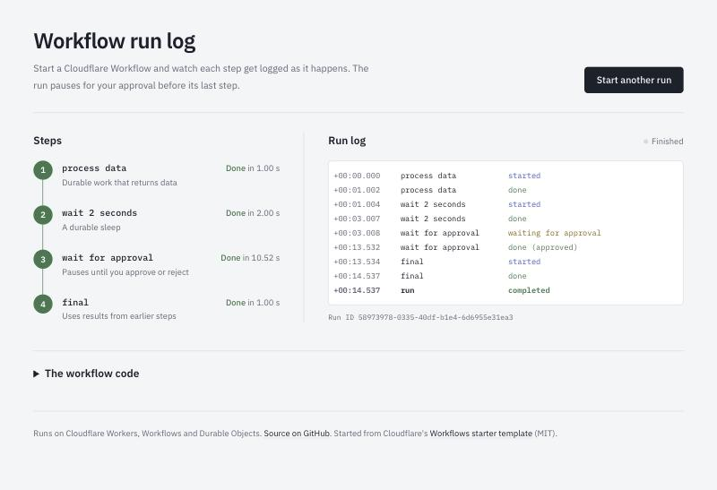

Cloudflare Workers, Workflows, Durable Objects
Watch a Workflow run, one step at a time.
A small app that starts a four step Cloudflare Workflow and logs every step change in the browser, live, over a WebSocket from a Durable Object. The run pauses until you approve or reject it.
A recording of one real run, played back faster. There is no public deployment.
How it works
The Worker starts a Workflow instance. The Workflow reports each step to one Durable Object per run, which stores the log and pushes the full state to every connected browser.
- BrowserReact page. Starts a run, opens a WebSocket, sends the approval.
- WorkerValidates run IDs and bodies, routes requests, serves the page.
- MyWorkflowFour durable steps. Reports each change and any failure.
- WorkflowStatusDOKeeps step states and a log capped at 100 lines. Uses WebSocket Hibernation.
Status reports run outside step.do, so they can repeat after a restart. The Durable Object ignores a report that changes nothing, which keeps replays harmless.
The run
Each step shows a different Workflows primitive.
process data
Durable work that returns data, with
step.do.wait 2 seconds
A durable sleep, with
step.sleep.wait for approval
Pauses until you approve or reject, with
step.waitForEvent. A timeout is logged and shown as a failed run.final
Uses the results of the earlier steps and returns the run output.

Quick start
Needs Node.js 20.19 or later. No Cloudflare account or login is needed to run it locally.
git clone https://github.com/patrickking67/logging-workflow.git
cd logging-workflow
npm ci
npm run devOpen http://localhost:4109 and select Start a run. Vite runs the Worker, the Workflow and the Durable Object locally through the Cloudflare Vite plugin.
Run npm run check for lint, type checks, the tests (inside the Workers runtime), the build and a wrangler deploy --dry-run.
Before you deploy it. The routes have no authentication: anyone who knows a run ID can watch or approve that run. Read the security notes first.